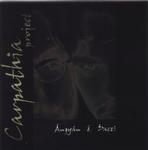

| Artist: | Carpathia Project |
| Title: | Carpathia Project |
| Label: | Stereo Periferic BGCD 045 |
| Length(s): | 38 minutes |
| Year(s) of release: | 1999 |
| Month of review: | 07/2000 |
| 1) | Caravan | 4.35 |
| 2) | Carpathia | 5.35 |
| 3) | War | 4.40 |
| 4) | Friends | 3.51 |
| 5) | Dance | 4.01 |
| 6) | Smile | 3.50 |
| 7) | Meridian | 4.36 |
| 8) | Fusion | 4.17 |
| 9) | Something For You | 2.09 |